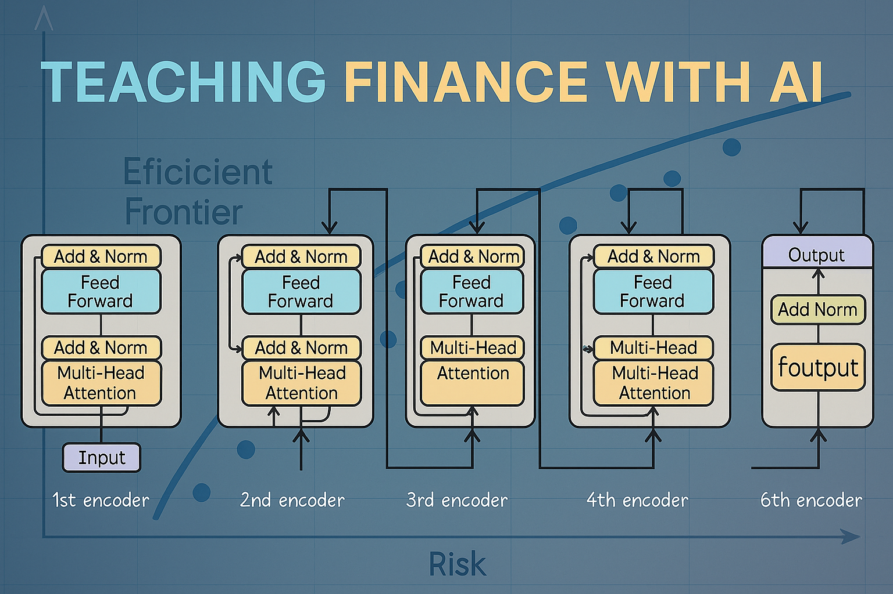

The purpose of this site is to share some experiences and thoughts about teaching MBA students how generative AI can and is being used in the finance industry and how they can leverage it to be more efficient in the workplace. We are all learning this on the fly, and of course things are evolving very quickly, so I’m hoping that sharing will be useful. I invite everyone to share in the comments section below.
I teach a six-week 18-contact-hour course to first year MBAs in the last part of their first year. For the most part, I do not teach new financial concepts in the course, because we have other courses for those. However, I try to reinforce students’ understanding of concepts they have already seen by approaching them with a different tool (AI + coding). The course caps a first-year sequence consisting of a one-semester core course in the fall followed by an ‘Applied Finance’ course in the first part of the spring that goes deeper into some of the topcs covered in the core course and develops spreadsheet modeling skills, and then my course in the last part of the spring that covers the same topics again, but using AI + coding instead of spreadsheets. I will describe that course in particular, but many of the observations below should apply to courses in other formats and to courses for different student groups.
Course Intro
A good demonstration at the start of a course on Finance with AI is to upload a company’s annual report to ChatGPT (or a different chatbot) and ask it for an investment analysis in the form of a Word document. You can ask the chatbot to include the following:
- a summary of the annual report
- a comparison of the firm to peer firms
- a two-stage DCF analysis formed by extrapolating trends
- a sensitivity analysis focused on the items for which extrapolation might be most unreasonable
- a buy/hold/sell recommendation
This example illustrates the power of AI ‘out of the box’ for financial analysis. It also explains why we are seeing so many stories about the potential demise of junior financial analysts. Of course, the AI is not perfect. We should engage our students in a discussion of how the report can be improved.
Compile the responses to build a more detailed prompt than the original prompt, start a new chatbot session (so the LLM will have no memory of the original prompt and response1), and submit the new prompt. Compare the results. Get students to discuss how they might further improve the new prompt. Then, point out that the eventual prompt that they form through this iterative process can be saved as a text file and uploaded each time they want to generate this type of report. This is prompt engineering.
Main Topics
My course is focused on three topics, each of which builds on the previous one and each of which culminates in a group project requirement.
- Using AI to write code for financial analysis, visualization, and report generation
- Using AI to create apps to automate the above
- Using AI to create custom chatbots for the above
The first two topics comprise roughly the first three weeks of the course, and the last half of the course is dedicated to the third topic.
Tools
Currently, the best tool for my course is Google Colab. It is a free Python environment in the cloud and has built-in Gemini assistance. There is no software to install, so there is no set-up required. Students need a little instruction in how to navigate Jupyter notebooks. I’ll say more about that below.
In previous years, I used Julius.ai. It is a bit simpler to use, because it is a simple chatbot interface rather than a Jupyter notebook See my blog post about Julius. It also provides access to LLMs from OpenAI and Anthropic, whereas Colab only offers Google Gemini. However, while Anthropic’s Claude is still the best coding LLM, Gemini has caught up considerably and is now a solid choice. Furthermore, Colab offers the following advantages: it is free, it produces Jupyter notebooks that are portable, and it can deploy apps to the cloud.
First Topic: Writing Code
Two good exercises for the first topic are mean-variance analysis and CAPM cost of capital calculations. I demo the first and assign the second as a group project. AI can write code to get data from Yahoo Finance, calculate returns, and perform the analyses, assuming we are willing to trust sample moments in mean-variance analysis. We could also input risk and risk premia assumptions directly for mean-variance analysis rather than calculating sample moments. See my blog posts about getting data from Yahoo Finance, mean-variance analysis, and calculating the cost of capital.
There are natural visualization components to both exercises, namely the plot of the mean-variance frontier and the CAPM scatter plot and regression line. AI can write python code to generate Word docs and/or PowerPoint decks containing the analyses and visualizations. See this post about generating Word docs and PowerPoint decks and this post about visualizations.
There is a lot that could be done on option pricing if students have seen options already. As remarked above, I teach a first-year class, and I can’t preempt what will be taught to second-year students. Except for that issue, I would certainly spend some time on options.
Second Topic: Building Apps
Whatever code an LLM writes for an exercise in Part 1 can be encapsulated in an app and made broadly available, so people can use the code without needing to go to Julius or Colab or any other Python platform. The Python Streamlit library makes app construction easy. The same is true of the Gradio library apparently, but I only have experience with Streamlit. See my blog post about creating apps.
Streamlit apps can be deployed to the cloud from Google Colab using the ngrok service. Students will need to create free accounts at ngrok and get an authorization token. They should save their authorization tokens as secret keys in Google Colab (they can ask Gemini how to do that). Then, they can tell Gemini to deploy apps using ngrok.
Deployment by ngrok is sufficient to illustrate the concept of building apps, but it is not a permanent deployment. It is probably best to leave permanent deployment as something for students to explore on their own or perhaps to cover in a special session, because it can be a bit complex. The best solution I have found is to install Claude Code and ask it to do it. However, students will need assistance even to install and use Claude Code. See my discussion of setting up and installing Claude Code.
Third Topic: Building Chatbots
Custom chatbots involve
- A user interface
- An API connection to an LLM
- A customization of user prompts
- System prompt
- Possible retrieval of documents
- Possible uses of tools
- Possible fine tuning
Creating a user interface is a variation of building an app and has already been essentially covered. Creating an API connection to an LLM is similar to setting up ngrok as covered in the second topic. Finally, the prompt that was saved as a text file in the course introduction can easily be used to create an example of a system prompt. So, a simple custom chatbot of user interface + API connection + system prompt uses only techniques that students have already seen at this point.
Students can get API keys from OpenAI even with free accounts, or they can get API keys from Anthropic or Google. They can ask any chatbot how to do it. They should save their API keys as secret keys in Google Colab in the same way they saved their ngrok keys. They will be charged on a per-usage basis, but the charges will be trivial for the experimentation that is done in the course. It is also possible to get a free API key from Open Router and to use free open source LLMS from Hugging Face, so there are no charges at all.
Once an API key is installed on Colab, students can ask Gemini to connect to the LLM and send a prompt and get a response. Gemini will probably import the openai Python package even for using other LLMs, because the OpenAI API has become the standard. The code that Gemini has to write to use the openai package is extremely simple and transparent, and it is useful for students to see it.
As a next step, students can ask Gemini to create a custom chatbot using Streamlit and ngrok. A good example for a system prompt is to ask the LLM to respond in a foreign language, so students can see that the system prompt actually works. It is important that Gemini build a loop in the app that collects all past prompts and responses and sends them together with the system prompt with each new prompt. If the chatbot does not seem to be remembering past prompts during a session, it is because the loop was not constructed. Students should ask Gemini to add the loop if this occurs.
A good topic for creating custom chatbots is valuing a company through a DCF analysis. The ultimate goal is that a user can simply ask for a valuation of a company, and the chatbot will ask appropriate questions and generate a DCF analysis, spelling out assumptions and the reasons for them and including sensitivity analyses. There are a lot of questions that one must grapple with on the way to creating such a chatbot, and it is a great way to get students to think in more detail about how to generate pro forma statements and what assumptions are reasonable in different contexts. It is worthwhile to discuss multiple Harvard-style cases in the process of refining the chatbot’s system prompt.
The assumptions that are used must ultimately be supplied by the user, but the chatbot can provide information - for example, trends in historical ratios - and ask the user to what extent the trends should be extrapolated or how they should be adjusted. Students can decide what ratios the chatbot should calculate use to generate the pro forma statements.
If we use OpenAI’s API, we get access to OpenAI’s Code Interpreter tool, which is a cloud-based Python environment. It has similar functionality to Google Colab but can be run in the background, invisible to the user. The purpose of employing the Code Interpreter is to ensure that mathematical errors are not made. LLMs are still not completely reliable for mathematical calculations.
An easy option for data is Yahoo Finance. Alternatively, users can be asked to upload data. It may also be possible to use other data sources, if there are available sources with APIs that can be used by the chatbot.
I treat building a valuation API as a class project that extends over multiple class sessions. It is too complex to to be presented to students as as an assignment. However, students should be able to build chatbots for mean-variance analysis or for cost of capital calculations.
Footnotes
LLMs do not actually remember past prompts and responses in a session. Instead the record of past prompts and responses in a session is sent by a chatbot to an LLM along with each new prompt, so that the LLM can use the record of past prompts and responses when generating a new response.↩︎